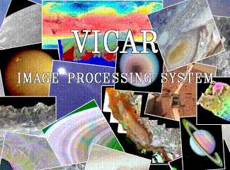

The VICAR Image Processing System VICAR, which stands for Video Image Communication And Retrieval, is a general purpose image processing software system that has been developed since 1966 to digitally process multi-dimensional imaging data. VICAR was developed primarily to process images from the Jet Propulsion Laboratory's unmanned planetary spacecraft. It is now used for a variety of other applications including biomedical image processing, cartography, earth resources, astronomy, and geological exploration. It is not only used by JPL but by several universities, NASA sites and other science/research institutions in the United States and Europe. NEW! The VICAR core is being released Open Source! Click *here* for details. The system consists of the following major subsystems:
Delivery specific help for individual VICAR programs can be found here. The VICAR User's Guide is available here. VICAR has its own file format which contains information about the structure and type of the data, as well as a history of the processing that has been done to the image. This is described in a document entitled The VICAR file format. The Image-Based Information System (IBIS) was designed to be a comprehensive geographic information system that performs operations on raster image,tabular, and graphics format data, using the Video Image Communication And Retrieval (VICAR) image processing system. The current generation of the VICAR software, was ported from a VMS only implementation into a portable version. The VICAR porting guide describes the changes that were made to VICAR programs to work in the new environment. An index of VICAR related documents may be found in the VICAR Documention Index. Instructions
for preparing and installing VICAR can be found in the
VICAR Installation Guide by Larry Bolef. This guide covers what platforms
are supported, what vendor and third party software is recommended or
required, disk space requirements, and all about patches and updates to
VICAR. |
|
Copyright 1994, 1995, California Institute of Technology. Sponsorship under NASA Contract NAS7-1270 is acknowledged. Document Review: CL 96-0842 on 22-May-96 by Charlotte Marsh |